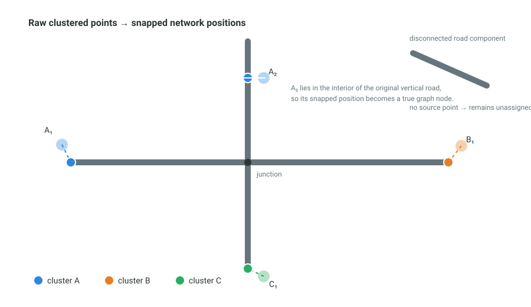
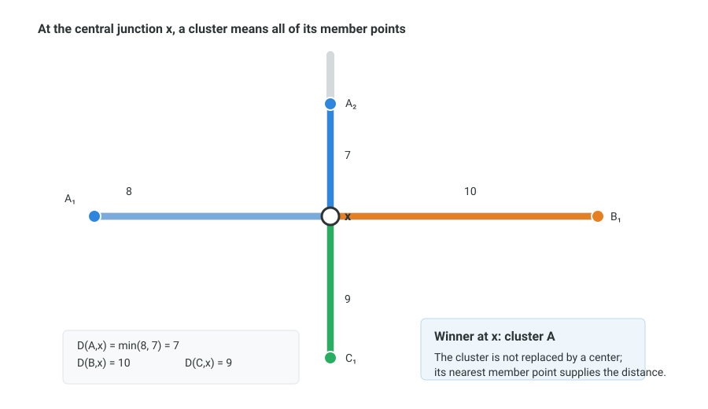
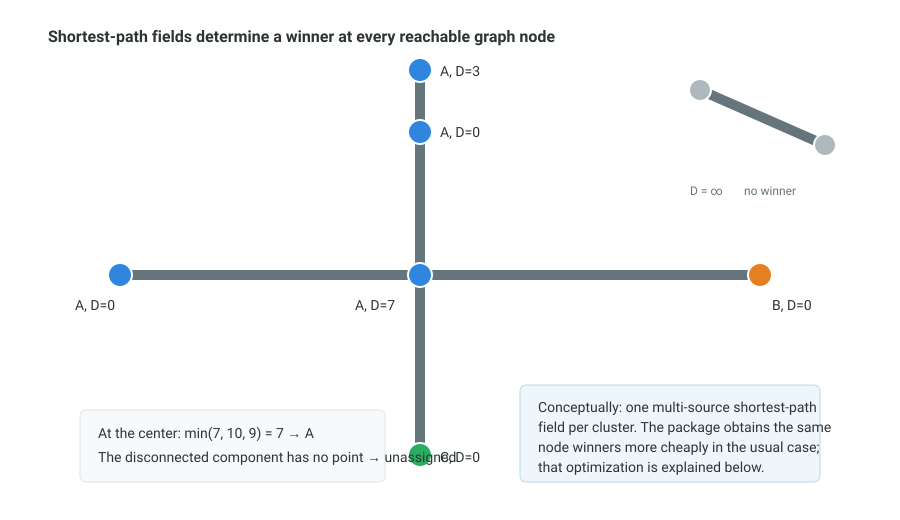
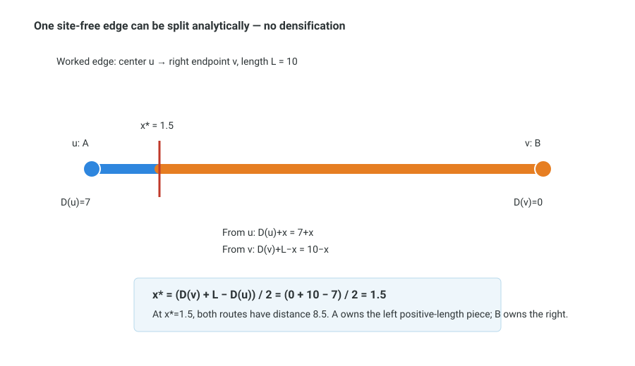
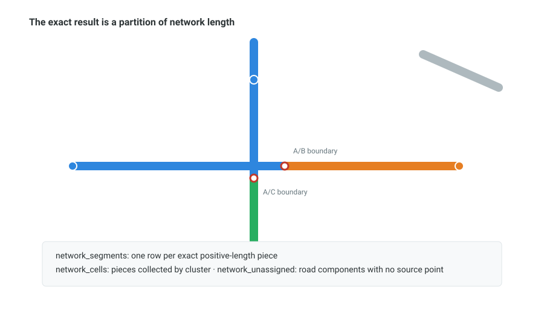
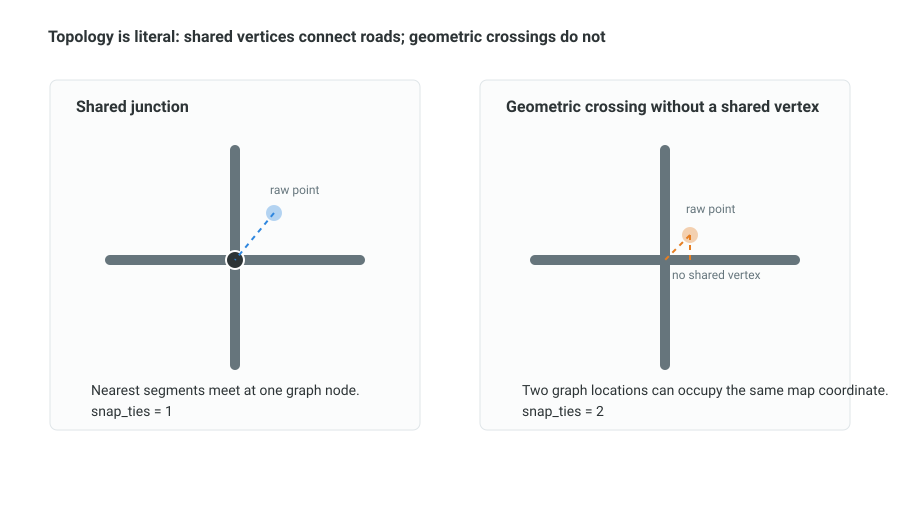
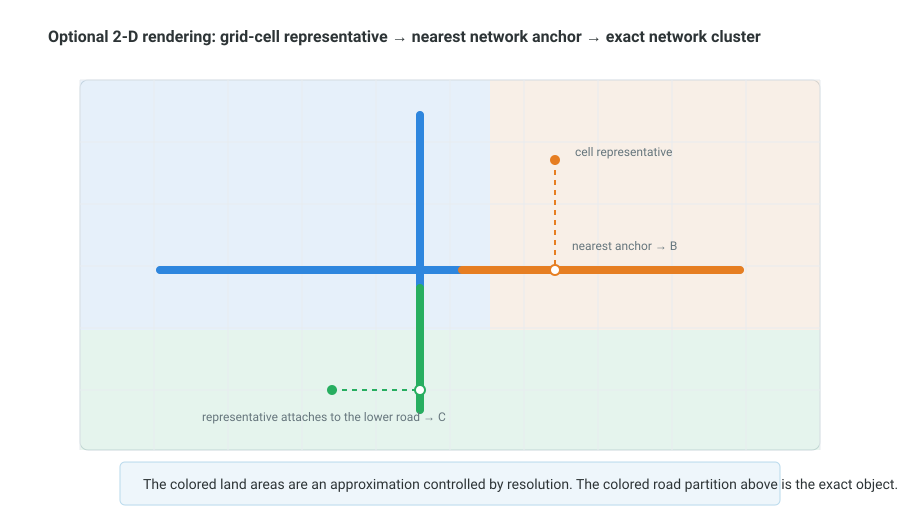
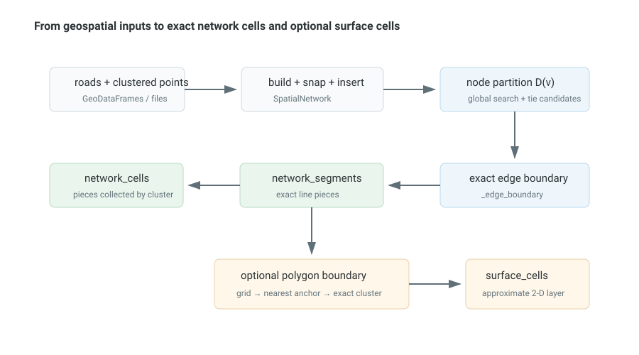

How net-voronoi works
net-voronoi partitions a spatial network among pre-existing point clusters.
A network location belongs to the cluster whose nearest member point is closest by shortest-path
distance along the network. The cluster is never replaced by a centroid or medoid.
network_segments and network_cells are the analytical Voronoi result.
The optional polygon surface is a separate grid approximation built by attaching each grid-cell
representative point to its nearest network location.
Start with one small network
We will use the same synthetic network throughout the derivation. Cluster A has two source points, while clusters B and C have one each. One point of A snaps to the interior of a road, so that location must become a true graph node. A small disconnected road component has no source point.

- Snap every source point and insert each interior snapped position as a graph node.
- For each cluster, define distance as the shortest path to its nearest member point.
- Determine the nearest cluster and nearest-cluster distance at graph nodes.
- Use one closed-form formula to place every winner transition inside a site-free edge.
- Collect the exact line pieces into cluster cells; source-free components stay unassigned.
- Optionally render a 2-D approximation through nearest-network attachment.
1. Snap points and make them part of the graph
The edge formula used later assumes that an edge has no source point in its interior. Therefore a
point cannot remain merely as metadata on a road segment. If its nearest network location lies inside
a segment, net-voronoi splits that segment at the snapped position and makes the position
a graph node.
This operation moves points to the road but does not invent road connectivity. A geometric crossing of two road lines is not a junction unless the input lines actually share a vertex there. Every positive-length input segment is retained.
max_snap_distance constrains the distance from the raw point to its nearest road
location. The final snapped node can differ from that location by the package's tiny numerical
segment tolerance when a point is merged with an existing vertex or an already inserted point.
2. A cluster is a set of source points, not a center
Let \(P_c\) be the snapped source points carrying cluster label \(c\), and let \(d_N(p,x)\) be shortest-path distance along the network from source point \(p\) to a network location \(x\). The distance from cluster \(c\) to \(x\) is
The nearest-cluster distance is
and the winner is the cluster attaining that minimum. Thus a cluster with several points has a multi-source shortest-path field. Its different points may control different parts of the network.

3. Find the winner at graph nodes
Conceptually, run a multi-source shortest-path search for every cluster. For graph node \(v\),
where \(S_c\) is the set of source nodes of cluster \(c\). The node winner is the cluster whose distance equals \(D(v)\). If several clusters are numerically tied, the lexicographically smallest string cluster ID wins.

The implementation normally obtains these same node winners with fewer searches; section 8 explains that optimization. The conceptual definition above is the reference against which the optimized solver is tested.
4. Split each site-free edge exactly
Now take a site-free edge \(e=(u,v)\) of length \(L\), and measure a position \(x\) from endpoint \(u\). Any shortest route from an interior point of this edge to a source must leave the edge through \(u\) or \(v\). Therefore the nearest-cluster distance along the edge is
If the deterministic winners at \(u\) and \(v\) are the same cluster, that cluster owns the whole positive-length edge. If the endpoint winners differ, the two endpoint expressions meet once:
The \(u\)-side winner owns the edge up to \(x^*\), and the \(v\)-side winner owns the remainder. The boundary is clipped to \([0,L]\); if it is within numerical tolerance of an endpoint, it is placed exactly on that endpoint. No road densification is needed.

Why the same-winner case needs no interior search
Suppose cluster \(c\) wins at both endpoints. Its distance to an interior location is at most
But \(D(x)\) is already the minimum over all clusters, so equality must hold. Cluster \(c\) is nearest everywhere on that edge.
5. Collect exact line pieces into cluster cells
Applying the boundary formula to every reachable edge yields the exact positive-length partition.
The authoritative table is network_segments: each row identifies one edge piece and its
cluster. network_cells collects those pieces by cluster without topologically unioning
coincident graph edges. Components with no source point are returned in
network_unassigned.

A cluster is not required to form one connected geographic piece. Because its generator is the set of all member points, network topology can legitimately give one cluster several separated pieces.
6. Ties and topology are explicit, not hidden
Cluster IDs are compared as strings. Numerical equality uses a local floating-point tolerance based only on the distances being compared:
This avoids allowing a very large distance elsewhere in the network to turn two distinct local distances into a tie. At an exact winner tie, the lexicographically smaller cluster ID is the deterministic pointwise winner. The positive-length network pieces still meet geometrically at the boundary point.
Snapping has a separate ambiguity diagnostic. snap_ties counts distinct nearest
network locations, not the number of equally near segments. At an ordinary junction,
several incident segments refer to one graph node and therefore count as one location.

7. The optional 2-D surface is a rendering of the exact network result
A network Voronoi diagram naturally partitions network length, not all land around the roads.
surface_voronoi therefore defines an explicit access model rather than pretending the
2-D polygon is exact:
- cover the supplied polygon boundary with a regular grid;
- clip each candidate square to the boundary;
- choose one representative point from each positive-area cell;
- attach that representative to its nearest network location;
- read the exact network cluster at the anchor;
- dissolve grid cells by cluster.

The resolution parameter controls this approximation. surface_grid_debug
records each cell's anchor edge, edge offset, straight-line access distance, assigned cluster, and
anchor_ties. surface_point_qa reports whether the rendered polygon of each
source point's own cluster covers that source point.
8. How the package gets node winners with few searches
The direct reference method is simple but can be expensive: run one shortest-path search per cluster and compare all cluster distances at every node. The production solver obtains the same answer more cheaply when exact ties are sparse.
First, a single multi-source search seeded by all source points gives \(D(v)\), the distance to the nearest cluster at every node, plus one provisional source label. If no equal-distance competitor was hidden by the shortest-path backend's arbitrary tie choice, that provisional label is already the deterministic winner.
The remaining task is therefore only to discover clusters that could replace a provisional label under the package's lexical tie rule. The implementation identifies candidate clusters where provisional labels change across edges that are tight with respect to the nearest-distance field. Only those candidates receive their own bounded shortest-path search. A candidate replaces a larger label only where its distance passes the final local tie test.
Typical road data
Exact ties are rare. There are few or no candidate clusters, so most of the network partition comes from one global multi-source search.
Tie-heavy data
On highly symmetric inputs, many clusters become candidates and the cost can approach the direct one-search-per-cluster method. The result remains the same.
The test suite keeps the slow direct implementation in tests/reference.py and compares
the optimized solver against it on random networks, tie-heavy grids, and cross-scale near-tie cases.
The network-wide tolerance used during candidate discovery is only a conservative search bound; it
is not the semantic tie rule.
From the derivation to the package

import geopandas as gpd
from netvoronoi import from_geodataframes, network_voronoi, surface_voronoi
roads = gpd.read_file("roads.gpkg", layer="roads")
points = gpd.read_parquet("clustered_points.parquet")
network = from_geodataframes(
roads,
points,
cluster_col="cluster_id",
point_id_col="canonical_id",
max_snap_distance=500,
)
# Exact line-network Voronoi partition:
exact = network_voronoi(network)
exact.segments
exact.cells
exact.unassigned
# Optional 2-D rendering:
boundary = gpd.read_file("boundary.gpkg", layer="boundary")
surface = surface_voronoi(network, boundary, resolution=100)
surface.cells
surface.grid
surface.point_qaroad lines + clustered points
↓
snap points and insert source nodes
↓
SpatialNetwork
↓
nearest-cluster field D(v) + deterministic node winners
↓
closed-form boundary on each site-free edge
↓
network_segments → network_cells
↓ optional nearest-network attachment on a grid
surface_cells + surface_grid_debug + surface_point_qaWhat is standard network Voronoi and what is specific to net-voronoi?
| Stage | Ordinary graph/network Voronoi idea | net-voronoi |
|---|---|---|
| Generators | Usually one source vertex or point per Voronoi site | Each cluster is a compound generator containing all of its labelled source points |
| Metric | Shortest-path distance on a graph/network | Shortest-path distance using geometric edge length on the supplied undirected line network |
| Cluster distance | Distance to one generator | Minimum distance to any member point of the cluster |
| Continuous edges | Graph formulations may classify vertices | Source points are inserted as nodes, then every site-free line edge is split at its exact continuous boundary |
| Ties | Implementation-dependent unless specified | Lexicographically smallest string cluster ID, with a local numerical tolerance |
| Disconnected graph | Handled componentwise | Components without any source point are explicitly returned as network_unassigned |
| Off-network area | Not part of the line-network Voronoi object | Optional grid approximation under an explicit nearest-network attachment model |
Scope and interpretation
net-voronoi currently assumes a projected, undirected simple line network whose edge
impedance is geometric length. Shared input vertices define junctions. Directed travel, turn
restrictions, arbitrary travel-time impedance, and automatic repair of uncertain topology are outside
the present model.
Cluster labels are literal strings for ordering purposes. A clustering noise label such as
-1 is therefore one ordinary cluster containing every point carrying that label. Remove or
relabel noise points before running net-voronoi if they should not compete for territory.
The central interpretation is intentionally narrow:
Everything else in the package—snapping, exact edge splitting, deterministic ties, QA layers, and the optional surface—is machinery for computing or rendering that definition consistently.
References
- Erwig, M. (2000). The graph Voronoi diagram with applications. Networks, 36(3), 156–163. DOI.
- Okabe, A. & Sugihara, K. (2012). Spatial Analysis along Networks: Statistical and Computational Methods, Chapter 4: Network Voronoi Diagrams. Wiley. DOI.
- net-voronoi source repository — implementation, DESIGN.md, tests, and command-line interface.